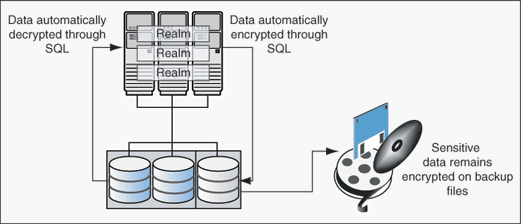

11 Integrating Oracle Database Vault with Other Oracle Products
You can integrate Oracle Database Vault with other Oracle products, such as Oracle Enterprise User Security.
- Integrating Oracle Database Vault with Enterprise User Security
You can integrate Oracle Database Vault with Oracle Enterprise User Security. - Integrating Oracle Database Vault with Transparent Data Encryption
Transparent Data Encryption complements Oracle Database Vault in that it provides data protection when the data leaves the secure perimeter of the database. - Integrating Oracle Database Vault with Oracle Label Security
You can integrate Oracle Database Vault with Oracle Label Security, and check the integration with reports and data dictionary views. - Integrating Oracle Database Vault with Oracle Data Guard
Oracle Database Vault can protect your Oracle Data Guard environments, providing additional security for your high availability and disaster recovery architecture. - Configuring Oracle Internet Directory Using Oracle Database Configuration Assistant
You can use Oracle Internet Directory in an Oracle Database Vault-enabled database. - Integrating Oracle Database Vault with Oracle APEX
You can integrate Oracle Database Vault with Oracle APEX.
11.1 Integrating Oracle Database Vault with Enterprise User Security
You can integrate Oracle Database Vault with Oracle Enterprise User Security.
- About Integrating Oracle Database Vault with Enterprise User Security
Enterprise User Security centrally manages database users and authorizations in one place. - Configuring an Enterprise User Authorization
To configure an Enterprise User authorization, you must create an Oracle Database Vault rule set to control the user access. - Configuring Oracle Database Vault Accounts as Enterprise User Accounts
You can configure existing Oracle Database Vault user accounts as enterprise user accounts.
11.1.1 About Integrating Oracle Database Vault with Enterprise User Security
Enterprise User Security centrally manages database users and authorizations in one place.
It is combined with Oracle Identity Management and is available in Oracle Database Enterprise Edition.
In general, to integrate Oracle Database Vault with Oracle Enterprise User Security, you configure the appropriate realms to protect the data that you want to protect in the database.
After you define the Oracle Database Vault realms as needed, you can create a rule set for the Enterprise users to allow or disallow their access.
See Also:
Oracle Database Enterprise User Security Administrator's Guide for more information about Enterprise User Security
11.1.2 Configuring an Enterprise User Authorization
To configure an Enterprise User authorization, you must create an Oracle Database Vault rule set to control the user access.
11.1.3 Configuring Oracle Database Vault Accounts as Enterprise User Accounts
You can configure existing Oracle Database Vault user accounts as enterprise user accounts.
See Also:
Oracle Database Enterprise User Security Administrator's Guide for detailed information about the User Migration Utility
11.2 Integrating Oracle Database Vault with Transparent Data Encryption
Transparent Data Encryption complements Oracle Database Vault in that it provides data protection when the data leaves the secure perimeter of the database.
With Transparent Data Encryption, a database administrator or database security administrator can simply encrypt columns with sensitive content in application tables, or encrypt entire application tablespaces, without any modification to the application.
If a user passes the authentication and authorization checks, Transparent Data Encryption automatically encrypts and decrypts information for the user. This way, you can implement encryption without having to change your applications.
Once you have granted the Transparent Data Encryption user the appropriate privileges, then Transparent Data Encryption can be managed as usual and be used complimentary to Database Vault.
Figure 11-1 shows how Oracle Database Vault realms handle encrypted data.
Figure 11-1 Encrypted Data and Oracle Database Vault

Description of "Figure 11-1 Encrypted Data and Oracle Database Vault"
See Also:
Oracle Database Advanced Security Guide for detailed information about Transparent Data Encryption11.3 Integrating Oracle Database Vault with Oracle Label Security
You can integrate Oracle Database Vault with Oracle Label Security, and check the integration with reports and data dictionary views.
- How Oracle Database Vault Is Integrated with Oracle Label Security
An Oracle Database Vault-Oracle Label Security integration enables you to assign an OLS label to a Database Vault factor identity. - Requirements for Using Oracle Database Vault with Oracle Label Security
You must fulfill specific requirements in place before you use Oracle Database Vault with Oracle Label Security. - Using Oracle Database Vault Factors with Oracle Label Security Policies
To enhance security, you can integrate Oracle Database Vault factors with Oracle Label Security policies. - Tutorial: Integrating Oracle Database Vault with Oracle Label Security
An Oracle Database Vault-Oracle Label Security integration can grant different levels of access to two administrative users who have the same privileges. - Related Reports and Data Dictionary Views
Oracle Database Vault provides reports and data dictionary views that list information about the Oracle Database Vault-Oracle Label Security integration.
11.3.1 How Oracle Database Vault Is Integrated with Oracle Label Security
An Oracle Database Vault-Oracle Label Security integration enables you to assign an OLS label to a Database Vault factor identity.
In Oracle Label Security, you can restrict access to rows in database tables or PL/SQL programs. For example, Mary may be able to see data protected by the HIGHLY SENSITIVE label, an Oracle Label Security label on the EMPLOYEE table that includes records that should have access limited to certain managers. Another label can be PUBLIC, which allows more open access to this data.
In Oracle Database Vault, you can create a factor called Network, for the network on which the database session originates, with the following identities:
-
Intranet: Used for when an employee is working on site within the intranet for your company.
-
Remote: Used for when the employee is working at home from a VPN connection.
You then assign a maximum session label to both. For example:
-
Assign the Intranet identity to the
HIGHLY SENSITIVEOracle Label Security label. -
Assign the Remote identity to the
PUBLIClabel.
This means that when Mary is working at home using their VPN connection, she have access only to the limited table data protected under the PUBLIC identity. But when she is in the office, she has access to the HIGHLY SENSITIVE data, because she is using the Intranet identity.
In a traditional auditing environment, you can audit the integration with Oracle Label Security by using the Label Security Integration Audit Report. Oracle Database Vault writes the audit trail to the DVSYS.AUDIT_TRAIL$ table. If unified auditing is enabled, then you can create audit policies to capture this information. Be aware that as of Oracle Database release 21c, traditional auditing is deprecated.
11.3.2 Requirements for Using Oracle Database Vault with Oracle Label Security
You must fulfill specific requirements in place before you use Oracle Database Vault with Oracle Label Security.
-
Oracle Label Security is licensed separately. Ensure that you have purchased a license to use it.
-
Before you install Oracle Database Vault, you must have already installed Oracle Label Security.
-
The installation process for Oracle Label Security creates the
LBACSYSuser account. As a user who has been granted theDV_ACCTMGRrole, unlock this account and grant it a new password. For example:sqlplus accts_admin_ace -- Or, sqlplus accts_admin_ace@hrpdb for a PDB Enter password: password ALTER USER LBACSYS ACCOUNT UNLOCK IDENTIFIED BY password;
Follow the guidelines in Oracle Database Security Guide to replace
passwordwith a password that is secure. -
If you plan to use the
LBACSYSuser account in Oracle Enterprise Manager, then log into Enterprise Manager as userSYSwith theSYSDBAadministrative privilege, and grant this user theSELECT ANY DICTIONARYandSELECT_CATALOG_ROLEsystem privileges. -
Ensure that you have the appropriate Oracle Label Security policies defined. For more information, see Oracle Label Security Administrator’s Guide.
-
If you plan to integrate an Oracle Label Security policy with a Database Vault policy, then ensure that the policy name for Oracle Label Security is less than 24 characters. You can check the names of Oracle Label Security policies by querying the
POLICY_NAMEcolumn of theALL_SA_POLICIESdata dictionary view.
11.3.3 Using Oracle Database Vault Factors with Oracle Label Security Policies
To enhance security, you can integrate Oracle Database Vault factors with Oracle Label Security policies.
- About Using Oracle Database Vault Factors with Oracle Label Security Policies
And Oracle Database Vault-Oracle Label Security integration enables you to control the maximum security clearance for a database session. - Configuring Factors to Work with an Oracle Label Security Policy
You can define factors that contribute to the maximum allowable data label of an Oracle Label Security policy.
11.3.3.1 About Using Oracle Database Vault Factors with Oracle Label Security Policies
And Oracle Database Vault-Oracle Label Security integration enables you to control the maximum security clearance for a database session.
Oracle Database Vault controls the maximum security clearance for a database session by merging the maximum allowable data for each label in a database session by merging the labels of Oracle Database Vault factors that are associated to an Oracle Label Security policy.
In brief, a label acts as an identifier for the access privileges of a database table row. A policy is a name associated with the labels, rules, and authorizations that govern access to table rows.
See Also:
Oracle Label Security Administrator’s Guide for more information about row labels and policies11.3.3.2 Configuring Factors to Work with an Oracle Label Security Policy
You can define factors that contribute to the maximum allowable data label of an Oracle Label Security policy.
Note:
If you do not associate an Oracle Label Security policy with factors, then Oracle Database Vault maintains the default Oracle Label Security behavior for the policy.
11.3.4 Tutorial: Integrating Oracle Database Vault with Oracle Label Security
An Oracle Database Vault-Oracle Label Security integration can grant different levels of access to two administrative users who have the same privileges.
- About This Tutorial
You can use Oracle Database Vault factors with Oracle Label Security and Oracle Virtual Private Database (VPD) to restrict sensitive data access. - Step 1: Create Users for This Tutorial
You must create two administrative users for this tutorial. - Step 2: Create the Oracle Label Security Policy
Next, you can create the Oracle Label Security policy and grant users the appropriate privileges for it. - Step 3: Create Oracle Database Vault Rules to Control the OLS Authorization
After you create the Oracle Label Security policy, you can create Database Vault rules to work with it. - Step 4: Update the ALTER SYSTEM Command Rule to Use the Rule Set
Before the rule set can be used, you must update the ALTER SYSTEM command rule, which is a default command rule. - Step 5: Test the Authorizations
With all the components in place, you are ready to test the authorization. - Step 6: Remove the Components for This Tutorial
You can remove the components that you created for this tutorial if you no longer need them.
11.3.4.1 About This Tutorial
You can use Oracle Database Vault factors with Oracle Label Security and Oracle Virtual Private Database (VPD) to restrict sensitive data access.
You can restrict this data so that it is only exposed to a database session when the correct combination of factors exists, defined by the security administrator, for any given database session.
11.3.4.2 Step 1: Create Users for This Tutorial
You must create two administrative users for this tutorial.
11.3.4.3 Step 2: Create the Oracle Label Security Policy
Next, you can create the Oracle Label Security policy and grant users the appropriate privileges for it.
11.3.4.4 Step 3: Create Oracle Database Vault Rules to Control the OLS Authorization
After you create the Oracle Label Security policy, you can create Database Vault rules to work with it.
11.3.4.5 Step 4: Update the ALTER SYSTEM Command Rule to Use the Rule Set
Before the rule set can be used, you must update the ALTER SYSTEM command rule, which is a default command rule.
11.3.4.6 Step 5: Test the Authorizations
With all the components in place, you are ready to test the authorization.
11.3.5 Related Reports and Data Dictionary Views
Oracle Database Vault provides reports and data dictionary views that list information about the Oracle Database Vault-Oracle Label Security integration.
Table 11-1 lists the Oracle Database Vault reports. See Oracle Database Vault Reports , for information about how to run these reports.
Table 11-1 Reports Related to Database Vault and Oracle Label Security Integration
| Report | Description |
|---|---|
|
Lists factors in which the Oracle Label Security policy does not exist. |
|
|
Lists invalid label identities (the Oracle Label Security label for this identity has been removed and no longer exists). |
|
|
Lists accounts and roles that have the |
Table 11-2 lists data dictionary views that provide information about existing Oracle Label Security policies used with Oracle Database Vault.
Table 11-2 Data Dictionary Views Used for Oracle Label Security
| Data Dictionary View | Description |
|---|---|
|
Lists the Oracle Label Security policies defined |
|
|
Lists the factors that are associated with Oracle Label Security policies |
|
|
Lists the Oracle Label Security label for each factor identifier in the |
11.4 Integrating Oracle Database Vault with Oracle Data Guard
Oracle Database Vault can protect your Oracle Data Guard environments, providing additional security for your high availability and disaster recovery architecture.
- Step 1: Configure the Primary Database
An Oracle Database Vault-Oracle Data Guard integration requires first, the primary database configuration, then the standby database configuration. - Step 2: Configure the Standby Database
You can perform the standby database configuration within the database to be used for the standby database. - How Auditing Works After an Oracle Database Vault-Oracle Active Data Guard Integration
After you have integrated Oracle Database Vault with Oracle Active Data Guard, how auditing is configured affects how audit records are generated. - Disabling Oracle Database Vault in an Oracle Data Guard Environment
If you want to disable Oracle Database Vault in an Oracle Data Guard environment, you must perform the procedures first on the primary database, and then on the standby database.
11.4.1 Step 1: Configure the Primary Database
An Oracle Database Vault-Oracle Data Guard integration requires first, the primary database configuration, then the standby database configuration.
-
For Linux and UNIX systems, ensure there is an
/etc/oratabentry for the database on the node in which you are installing Oracle Database Vault. -
If you are using Data Guard Broker, then from the command prompt, disable the configuration as follows:
dgmgrl sys Enter password: password DGMGRL> disable configuration; -
Configure and enable Oracle Database Vault on the primary server.
By default, Oracle Database Vault is installed as part of Oracle Database. You can check the registration status by querying the
DBA_DV_STATUSdata dictionary view. -
Log into the database instance as user
SYSwith theSYSDBAadministrative privilege.sqlplus sys as sysdba Enter password: password -
Run the following
ALTER SYSTEMstatements:ALTER SYSTEM SET AUDIT_SYS_OPERATIONS=TRUE SCOPE=SPFILE; ALTER SYSTEM SET OS_ROLES=FALSE SCOPE=SPFILE; ALTER SYSTEM SET RECYCLEBIN='OFF' SCOPE=SPFILE; ALTER SYSTEM SET REMOTE_LOGIN_PASSWORDFILE='EXCLUSIVE' SCOPE=SPFILE; ALTER SYSTEM SET SQL92_SECURITY=TRUE SCOPE=SPFILE; ALTER SYSTEM SET REMOTE_OS_AUTHENT=FALSE SCOPE=SPFILE; ALTER SYSTEM SET REMOTE_OS_ROLES=FALSE SCOPE=SPFILE;
-
Run the
ALTER SYSTEMstatement on each database instance to set the parameters as shown in Step 5. -
Restart each database instance.
CONNECT SYS AS SYSOPER Enter password: password SHUTDOWN IMMEDIATE STARTUP
Related Topics
Parent topic: Integrating Oracle Database Vault with Oracle Data Guard
11.4.2 Step 2: Configure the Standby Database
You can perform the standby database configuration within the database to be used for the standby database.
Parent topic: Integrating Oracle Database Vault with Oracle Data Guard
11.4.3 How Auditing Works After an Oracle Database Vault-Oracle Active Data Guard Integration
After you have integrated Oracle Database Vault with Oracle Active Data Guard, how auditing is configured affects how audit records are generated.
If you want to use the Active Data Guard physical standby database for read-only queries, then you must use pure unified auditing, not mixed mode. If mixed mode is used, then any query in the Active Data Guard physical standby that generates Oracle Database Vault audit records will be blocked. Oracle Database Vault cannot write to the traditional Database Vault audit table (DVSYS.AUDIT_TRAILS$). Unified auditing will ensure that the Database Vault audit data is written into the operating system log files in an Oracle Active Data Guard physical standby database. You can move the data in these log files to the unified audit trail. Remember that to audit Database Vault activities, you must create unified audit policies, because the Database Vault traditional audit settings do not apply to unified auditing.
Parent topic: Integrating Oracle Database Vault with Oracle Data Guard
11.4.4 Disabling Oracle Database Vault in an Oracle Data Guard Environment
If you want to disable Oracle Database Vault in an Oracle Data Guard environment, you must perform the procedures first on the primary database, and then on the standby database.
Perform the disablement of Oracle Database Vault on the primary and standby databases in the following order:
- Disable Oracle Database Vault on the primary database.
- Disable Oracle Database Vault on the secondary database.
- Restart the primary database.
- Restart each standby database.
Related Topics
Parent topic: Integrating Oracle Database Vault with Oracle Data Guard
11.5 Configuring Oracle Internet Directory Using Oracle Database Configuration Assistant
You can use Oracle Internet Directory in an Oracle Database Vault-enabled database.
However, if you want to configure Oracle Internet Directory (OID) using Oracle Database Configuration Assistant (DBCA), then you must first disable Oracle Database Vault.
Related Topics
11.6 Integrating Oracle Database Vault with Oracle APEX
You can integrate Oracle Database Vault with Oracle APEX.
- About Integrating Oracle Database Vault with Oracle APEX
Oracle APEX is Oracle's primary tool for developing Web applications with SQL and PL/SQL. - Installing or Upgrading Oracle APEX with Oracle Database Vault Enabled
When Oracle Database Vault is enabled, additional privileges are required to install or upgrade Oracle APEX. - Authorizing the Oracle APEX Schema for Oracle Database Vault Activities
You must add the Oracle APEX schema (for example,APEX_SCHEMA) to Oracle Database Vault realms and authorizations that are required by Oracle APEX. - Authorizing Oracle APEX to Use Oracle Scheduler
Oracle APEX uses Oracle Scheduler and must be authorized to continue to do so. - Authorizing Oracle APEX to Perform DDL Tasks
You must authorize the Oracle APEX schema to use its DDL privileges on objects that it has access to but may be subject to additional Oracle Database Vault controls - Authorizing Oracle APEX to Perform Information Lifecycle Maintenance Tasks
You must authorize the Oracle APEX schema to perform maintenance tasks. - Authorizing Oracle APEX to Proxy Users for Oracle Rest Data Services
If you use Oracle Rest Data Services (ORDS), then you must authorize proxy users. - Oracle APEX and Application Objects Protected by Oracle Database Vault
Objects that are protected by Oracle Database Vault realms and command rules are still protected after you have integrated Oracle APEX. - Troubleshooting the Oracle APEX and Database Vault Integration
If you have problems with the integration of Oracle APEX and Database Vault, then you can diagnose these problems using tracing and Oracle Database Vault simulation mode.
11.6.1 About Integrating Oracle Database Vault with Oracle APEX
Oracle APEX is Oracle's primary tool for developing Web applications with SQL and PL/SQL.
You can configure and enable Oracle Database Vault to protect applications that have been developed using Oracle APEX. Oracle Database Vault can provide the same controls to Oracle APEX that are available to other applications, including custom and enterprise applications. Because Oracle APEX has its own web-based user interface to create and manage applications, as well as Oracle APEX workspaces and users, there are certain steps that you must follow so that Oracle APEX can work an Oracle database that has Oracle Database Vault enabled.
Parent topic: Integrating Oracle Database Vault with Oracle APEX
11.6.2 Installing or Upgrading Oracle APEX with Oracle Database Vault Enabled
When Oracle Database Vault is enabled, additional privileges are required to install or upgrade Oracle APEX.
Parent topic: Integrating Oracle Database Vault with Oracle APEX
11.6.3 Authorizing the Oracle APEX Schema for Oracle Database Vault Activities
You must add the Oracle APEX schema (for example, APEX_SCHEMA) to Oracle Database Vault realms and authorizations that are required by Oracle APEX.
Parent topic: Integrating Oracle Database Vault with Oracle APEX
11.6.4 Authorizing Oracle APEX to Use Oracle Scheduler
Oracle APEX uses Oracle Scheduler and must be authorized to continue to do so.
Related Topics
Parent topic: Integrating Oracle Database Vault with Oracle APEX
11.6.5 Authorizing Oracle APEX to Perform DDL Tasks
You must authorize the Oracle APEX schema to use its DDL privileges on objects that it has access to but may be subject to additional Oracle Database Vault controls
Related Topics
Parent topic: Integrating Oracle Database Vault with Oracle APEX
11.6.6 Authorizing Oracle APEX to Perform Information Lifecycle Maintenance Tasks
You must authorize the Oracle APEX schema to perform maintenance tasks.
Parent topic: Integrating Oracle Database Vault with Oracle APEX
11.6.7 Authorizing Oracle APEX to Proxy Users for Oracle Rest Data Services
If you use Oracle Rest Data Services (ORDS), then you must authorize proxy users.
Parent topic: Integrating Oracle Database Vault with Oracle APEX
11.6.8 Oracle APEX and Application Objects Protected by Oracle Database Vault
Objects that are protected by Oracle Database Vault realms and command rules are still protected after you have integrated Oracle APEX.
The same privileges and authorizations must be met before Oracle Database Vault will grant access to these objects. For example, if you create an Oracle APEX workspace that requires access to the HR schema objects, and there is an Oracle Database Vault realm protected the HR schema objects, then the workspace will be required to have authorization to access the realm.
Related Topics
Parent topic: Integrating Oracle Database Vault with Oracle APEX
11.6.9 Troubleshooting the Oracle APEX and Database Vault Integration
If you have problems with the integration of Oracle APEX and Database Vault, then you can diagnose these problems using tracing and Oracle Database Vault simulation mode.
- Tracing: Trace files enable you to track the Oracle Database Vault database instance for server and background process events. Use trace file to find out if the Oracle Database Vault policy authorization succeeded or failed. They are also useful for resolving issues such as bugs and other unexpected behavior.
- Simulation mode: You can use simulation mode to capture violations in a simulation log instead of blocking SQL execution by Oracle Database Vault realms and command rules. Oracle Database Vault stores these errors in a central location so that you can easily analyze them.